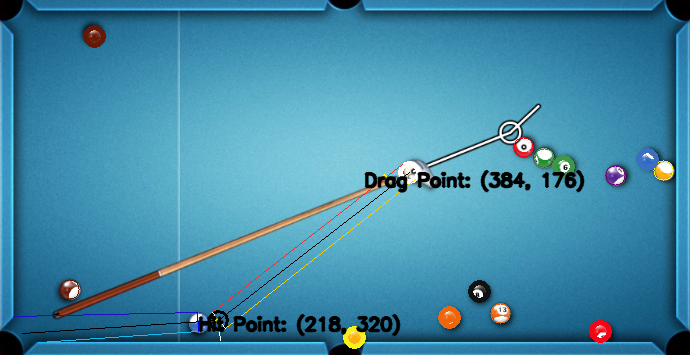

AteBallPool Bot
Python
C++
Open CV2
Pycharm
Object Oriented
The AteBallPool Bot is a WIP Python bot designed to automatically
play 8 ball pool on miniclip.com. The bot utilizes PyAutoGui, a python
module designed to control the mouse and keyboard, and OpenCV2, a
python module that contains a library of computer vision strategies.
The bot was written in Python initially, and is being ported to C++.
The bot works in multiple different stages: menu navigation/pre-game setup
and game navigation.
The pre-game setup involves logging into miniclip.com, redeeming various daily
rewards, and setting up games with random players or friends. My intentions
were never to game the system or really reap any benefits, other than the
satisfaction of creating a bot that works. Thus, the final product will only
set up games against friends or in the games 'practice' mode.
The game setup contains most of the guts of the bot. Once a game starts, the bot
operates on information acquired at the beginning of the round (a screen shot is
taken). Each of the 6 pockets are marked, the designated suit (or lack of a suit)
is assigned, and then the pool balls are outlined.
The process of outlining the pool balls relies on a variety of different color
detection and hough circle detection techniques. These techniques are used to
differentiate between solid and stripes, as well as find an accurate center point.
Once each pool ball is outlined, the next major step is to figure out a viable target. Various different paths from each ball to eligible holes are examined, and if a viable path is discovered, the path from the cue ball to the point the ball needs to be hit at is checked. If both paths are determined to be clear, the bot calculates the power needed to hit the ball in and then hits the ball.
Cooking Simulator
C#
Unity
Visual Studio
UNC Walking Dead
C#
Unity
Visual Studio

Doodle Board
Java
Eclipse
Object Oriented